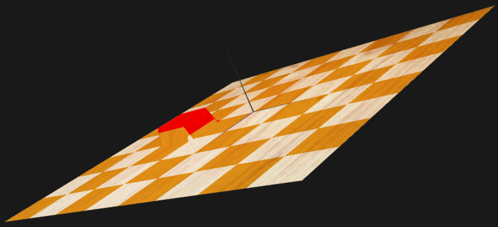
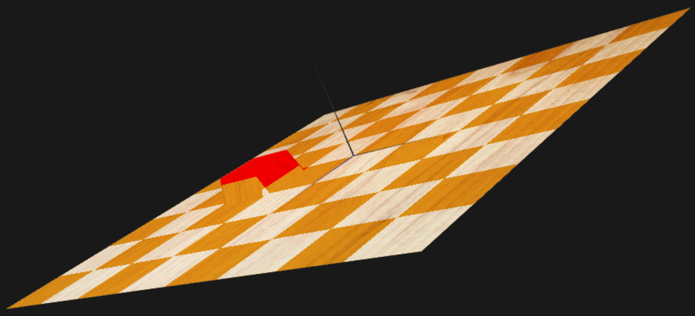

Laboratório de Aplicações com Interface Gráfica
(Aulas Práticas)
MIEIC – 2016/2017
Trabalho Prático 2 – Aperfeiçoamento de Técnicas de Utilização de WebGL
O objetivo deste trabalho é introduzir novas técnicas gráficas, como superfícies 2D/3D, animação, e algumas mais avançadas, como sejam os shaders baseados em GLSL ES 1.0 (OpenGL for Embedded Systems’ Shading Language). Propõe-se assim a implementação de algumas funcionalidades em código, que possam depois ser exploradas através de uma extensão à linguagem DSX, e à criação de uma cena que as utilize. Este documento descreve as funcionalidades pretendidas, bem como a extensão proposta. Apesar de não ser obrigatório, recomenda-se a utilização/extensão do parser DSX, realizado no TP1, para suportar as novas funcionalidades solicitadas neste enunciado.
Uma animação
neste contexto corresponde a uma transformação geométrica
representável
em função do tempo. Assim, em intervalos de tempo
aproximadamente
regulares, a função devolve a função transformação geométrica a
aplicar
a um objeto. Nota: assume-se que a "frente" do
objeto aponta na direção positiva do eixo dos ZZ.
Nesta fase do trabalho, dever-se-á implementar um conjunto de classes Animation, LinearAnimation e CircularAnimation, de acordo com as sub-secções seguintes.
Implementar a classe Animation como classe base (abstrata) para aplicar animações a um objeto.
a) Criar a classe LinearAnimation, derivada de Animation, para trajetórias lineares, que permita definir uma animação caracterizada por um vetor de Pontos de Controlo e tempo de duração total em segundos. A velocidade deve ser calculada tendo em conta o comprimento total dos vários segmentos e o tempo total; deve ser constante ao longo do percurso.
Exemplo:
Pontos de Controlo = {(0,0,0), (1,0,0), (1,1,0)}
Tempo= 10 s
b) O objeto em movimento deve alterar a sua orientação horizontal (x,z), rodando em torno de um eixo vertical, de modo a corrigir a direção quando, de acordo com a trajetória, muda de segmento de reta (ou seja, um movimento de "helicóptero").
a) Criar a classe CircularAnimation, derivada de Animation, para trajetórias circulares em planos paralelos a ZX (rotação em torno de um eixo vertical), que permita definir uma animação caracterizada pelo centro e raio de circunferência, ângulo inicial (medido em relação à direção positiva do eixo XX) e ângulo de rotação (este último a adicionar ao ângulo inicial), ambos em graus, e tempo de duração em segundos.
Exemplo:
Centro = (10, 10, 10)
Raio = 5
Ângulo Inicial = 40º
Ângulo de rotação = 20º
Tempo= 20 s
b) O objeto em movimento deve alterar a sua orientação horizontal (x,z) de acordo com a trajetória, tal como no caso anterior.
Implementar a utilização destas classes, segundo a extensão proposta abaixo para a linguagem DSX.
Um objeto animado desta forma deverá manter a sua horizontalidade (ou seja, manter-se paralelo ao plano XZ), apenas devendo alterar a sua orientação por rotação em torno de um eixo vertical; a orientação do objeto deve ser coerente com a direção e sentido do seu movimento (como p.ex. um helicóptero).
As superfícies vão ser modeladas através de curvas de grau 1,2 ou 3, e discretizadas em partes, nas duas direções u e v.
a) Recriar uma classe Plane, extensão de CGFnurbsObject, de forma a gerar, utilizando grelhas, um plano de dimensões dX * dY unidades, assente em XY, centrado na origem, com a face visível apontando para +Z e discretizado num número de divisões diferente em X e em Y. Devem ser geradas também as coordenadas de textura.
b) Recriar uma classe Patch, extensão de CGFnurbsObject, de forma a gerar, utilizando grelhas, um patch curvo, com ordens 1, 2 ou 3 em cada uma das duas direções u e v. O patch deverá poder ser discretizado num número de divisões diferente em u e em v.
Os pontos de controlo deverão ser fornecidos segundo uma lista ordenada, primeiro em u e depois em v. A disposição dos pontos apresenta-se na figura junta; no exemplo, foi usado o grau 2 na direção u (3 pontos por curva) e grau 3 na direção v (4 pontos por curva), num total de 3*4=12 pontos.
Criar uma nova primitiva "plane" na linguagem DSX.
Criar uma nova primitiva "patch" a incluir na linguagem DSX, que possa representar superfícies de grau 1, 2 ou 3 nas duas direções u e v.
Criar uma nova primitiva "vehicle", a incluir na linguagem DSX, que represente um veículo (que poderá depois animar…). A composição do veículo é livre mas deverá incluir patches.
Criar uma cena em DSX que apresente vários objetos obtidos com base nas primitivas anteriores. A cena deverá incluir veículos animados segundo as classes de animação definidas anteriormente.
Deverá incluir uma animação composta, correspondente a uma sequência de animações baseadas nas classes criadas. A animação composta deve incluir pelo menos dois segmentos de reta (classe LinearAnimation), intermediados por um segmento circular (CircularAnimation).
Pretende-se implementar um shader (vertex+fragment) específico para um tabuleiro tipo xadrez, de acordo com as diretivas abaixo, e adicionar suporte para o mesmo no DSX.
Devem ser definidos pelo menos os seguintes parâmetros (uniforms) do shader, a serem configuráveis via JavaScript:
Este shader deverá ser aplicado a uma grelha poligonal (um plane tal como definido no exercício 1.2.1.a, com dimensões (dX,dY) = (1.0, 1.0) ) com um número de divisões igual ou múltiplo do número de quadrículas (du, dv), e tendo as suas coordenadas de textura a variar entre 0 e 1, em cada uma das dimensões.
O shader deve usar os parâmetros e as coordenadas de textura para:
O resultado final deve ser semelhante ao apresentado na figura junta:
Devem criar uma nova primitiva tal como descrito abaixo, que permita instanciar tabuleiros de diferentes dimensões.
<chessboard du="ii" dv="ii" textureref="ss" su="ii" sv="ii">
<c1 r="ff" g="ff" b="ff" a="ff" />
<c2 r="ff" g="ff" b="ff" a="ff" />
<cs r="ff" g="ff" b="ff" a="ff" />
</chessboard>
Devem também apresentar uma cena que contenha dois ou mais tabuleiros com dimensões, cores e texturas diferentes.
Os trabalhos devem ser efetuados em grupos de dois estudantes. Em caso de impossibilidade (p.ex. por falta de paridade numa turma), deve ser discutida com o docente a melhor alternativa.
A avaliação será feita em aula prática, numa apresentação de cada grupo ao docente respetivo.
Na prova de avaliação individual, serão pedidas várias funcionalidades adicionais, a implementar sobre o código original desenvolvido em trabalho de grupo.
Média aritmética das duas avaliações anteriores.
De acordo com a formulação constante na ficha de disciplina, a avaliação deste trabalho conta para a classificação final com um peso de:
80% * 30% = 24%
Tendo em atenção as funcionalidades enunciadas, serão considerados os seguintes critérios para efeitos de Avaliação do Trabalho de Grupo:
|
Estruturação e Documentação do código |
3 valores |
|
Animação |
5 valores |
|
Superfícies 2D e 3D |
5 valores |
|
Shaders |
5 valores |
|
Aspeto geral e criatividade |
2 valores |
O enunciado incorpora, em cada alínea, a sua classificação máxima, correspondendo esta a um ótimo desenvolvimento, de acordo com os critérios seguintes, e que cumpra com todas as funcionalidades enunciadas. Sem perda da criatividade desejada num trabalho deste tipo, não serão contabilizados, para efeitos de avaliação, quaisquer desenvolvimentos além dos que são pedidos.
Planeamento do Trabalho:
Entrega:
Prova de avaliação individual:
A linguagem DSX encontra-se definida no questionário do trabalho prático 1. Nesta secção são apresentadas as extensões ao formato DSX de modo a poder comportar as funcionalidades descritas neste enunciado.
Ao ser lido e interpretado por uma aplicação gráfica, um ficheiro em linguagem DSX deve ser verificado em termos de sintaxe, devendo a aplicação gerar mensagens de erro ou avisos, identificando eventuais erros encontrados ou situações anómalas ou indesejáveis.
Na descrição abaixo, os símbolos utilizados têm o seguinte significado:
ii: valor inteiro
ff: valor em vírgula-flutuante
ss: string
ee: caracter "x" ou "y" ou "z", especificando um eixo
tt: valor Booleano na forma "true" ou "false"
Segue-se uma listagem representativa da sintaxe pretendida, no que respeita às extensões à linguagem DSX. As tags / atributos acrescentados encontram-se escritos a vermelho. A cinzento encontram-se elementos definidos na versão original da linguagem DSX, usados para melhor contextualizar as alterações.
<dsx>
...
<!-- novo bloco de animacao -->
<animations>
<!-- podem existir zero ou mais nós "animation" -->
<!-- span é o tempo, em segundos, que a animação deve -->
<!-- demorar. Nesta versão do formato DSX, type pode ter -->
<!-- o valor "linear" ou "circular"; na animacao circular -->
<!-- os angulos sao expressos em graus -->
<animation id="ss" span="ff" type="linear">
<controlpoint xx="ff" yy="ff" zz="ff />
...
</animation>
<animation id="ss" span="ff" type="circular"
centerx="ff" centery="ff" centerz="ff"
radius="ff" startang="ff" rotang="ff" />
</animations>
...
<primitives>
<primitive id="ss">
...
<!-- Nova primitiva: plano, discretizado em grelha -->
<!-- exemplo: -->
<!-- <plane dimX="3" dimY="2" partsX="10" partsY="7"/> -->
<!-- gera um plano de dimensões 3 x 2 unidades -->
<!-- assente em XY, centrado na origem, com a -->
<!-- face visível apontando para +Z e discretizado -->
<!-- em 10 partes no eixo XX e 7 partes no YY -->
<plane dimX="ff" dimY="ff" partsX="ii" partsY="ii"/>
<!-- Nova primitiva: patch, discretizado em grelha -->
<!-- Exemplo: -->
<!-- <patch orderU="2" orderV="3" partsU="7" partsV="9" > -->
<!-- <controlpoint x=0.0 y=0.0 z=0.0 /> -->
<!-- <controlpoint x=2.0 y=1.0 z=0.0 /> -->
<!-- etc, total de 12 pontos -->
<!-- O exemplo gera um patch com -->
<!-- Direcao U: ordem=2 (3 pontos por curva), -->
<!-- discretizacao em 7 partes -->
<!-- Direcao V: ordem=3 (4 pontos por curva), -->
<!-- discretizacao em 9 partes. -->
<!-- O numero total de pontos a fornecer e' -->
<!-- (2+1)*(3+1)=12 pontos -->
<patch orderU="ii" orderV="ii" partsU="ii" partsV="ii" >
<controlpoint x="ff" y="ff" z="ff" />
...
</patch>
<!-- Nova primitiva: corresponde a um veículo voador -->
<!-- Inclui pelo menos uma superfície não-plana -->
<!-- gerada utilizando evaluators -->
<vehicle />
<!-- Nova primitiva: tabuleiro de xadrez -->
<!-- parâmetros: -->
<!-- - dimensões em u e em v (du,dv) -->
<!-- - o id da textura de base
(dimensões potências de 2) -->
<!-- - a posição da casa selecionada (su,sv) -->
<!-- - as três cores a utilizar -->
<chessboard du="ii" dv="ii" textureref="ss" su="ii" sv="ii">
<c1 r="ff" g="ff" b="ff" a="ff" />
<c2 r="ff" g="ff" b="ff" a="ff" />
<cs r="ff" g="ff" b="ff" a="ff" />
</chessboard>
</primitive>
</primitives>
<components>
<component id="ss">
<!-- bloco "transformation" obrigatorio -->
<transformation>
<!-- definido no trab. 1 -->
</transformation>
<!-- bloco opcional -->
<animation>
<!-- podem ser declaradas zero ou mais animacoes -->
<!-- de entre as declaradas no bloco de animacoes; -->
<!-- as animacoes devem ser executadas sequencialmente -->
<!-- pela ordem com que sao declaradas. -->
<!-- NOTA: as transformacoes geometricas da -->
<!-- animacao seguem as mesmas regras de ordenacao -->
<!-- definidas no trabalho anterior para as -->
<!-- transformacoes geometricas; dado que as -->
<!-- animacoes sao declaradas apos as transformacoes -->
<!-- geometricas do mesmo objeto, isso significa -->
<!-- que as animacoes sao afetadas pelas transformacoes -->
<!-- geometricas do objeto. -->
<animationref
id="ss" />
...
</animation>
</component>
</components>
</dsx>